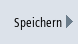

Über die Bedienoberfläche werden alle maschinenspezifischen Informationen der Steuerung in einer Konfigurationsdatei zusammengefasst. Über die eingerichteten Laufwerke haben Sie die Möglichkeit, die maschinenspezifischen Informationen zu speichern.
Vorgehensweise
 | 1. | Wählen Sie den Bedienbereich "Diagnose" an. |
 | 2. | Drücken Sie den Softkey "Version".
Der Aufruf der Versionsanzeige nimmt einige Zeit in Anspruch. In der Dialogzeile wird Ihnen die Ermittlung der Daten in einer Fortschrittsanzeige und durch entsprechenden Text angezeigt. |
|  | 3. | Drücken Sie den Softkey "Speichern". Das Fenster "Versionsinformation speichern: Ablage auswählen" öffnet sich. Je nach Konfiguration werden folgende Speicherorte angeboten: |
 | 4. | Drücken Sie den Softkey "Neues Verzeichnis", wenn Sie ein eigenes Verzeichnis anlegen wollen. |
 | 5. | Drücken Sie den Softkey "OK". Das Verzeichnis ist angelegt. |
| | 6. | Drücken Sie den Softkey "OK" erneut, um den Ablageort zu bestätigen. Das Fenster "Versionsinformation speichern: Name" öffnet sich. |
| | 7. | Legen Sie die gewünschten Vorgaben fest. |
| | | Eingabefeld "Name:" Der Dateiname wird mit <Maschinenname/nr.>+<Speicherkartennummer> vorbelegt. An den Dateinamen wird automatisch "_config.xml" bzw. "_version.txt" angehängt. Eingabefeld "Kommentar:" Sie haben die Möglichkeit, einen Kommentar einzugeben, der mit den Konfigurationsdaten abgespeichert wird.
|
| | | Versionsdaten (.TXT) Aktivieren Sie das Kontrollkästchen, wenn Sie die Ausgabe der reinen Versionsdaten im Textformat wünschen. Konfigurationsdaten (.XML) Aktivieren Sie das Kontrollkästchen, wenn Sie die Ausgabe der Konfigurationsdaten im XML-Format wünschen. Die Konfigurationsdatei enthält die unter Maschinenidentität eingegebenen Daten, den Lizenzbedarf, die Versionsinformationen und die Logbucheinträge.
|
| | 8. | Drücken Sie den Softkey "OK", um die Datenübertragung zu starten. |